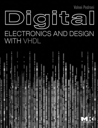
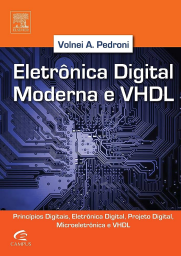

Sistemas Digitais e Microprocessadores
Última edição: 2023-08-13
Repositório: https://github.com/efurlanm/teaching/tree/main/sdm
Ementa
- Circuitos digitais e álgebra booleana
- Bases numéricas e códigos
- Introdução à álgebra booleana
- Circuitos digitais
- Circuitos lógicos combinacional e sequencial
- Introdução à lógica combinacional e sequencial
- Circuitos combinacionais
- Flip-flops e circuitos correlatos
- Arquitetura de microprocessadores e microcontroladores
- Introdução ao microprocessamento
- Arquitetura RISC
- Arquitetura CISC
- Programação de microprocessadores e microcontroladores
- Microcontrolador: Arduino
- Novas arquiteturas e tendências
- Aplicações para processadores ARM
Bibliografia


- PERIM, V.; LOPES, G. M. G.; MARTIN, A. A. Sistemas Digitais e Microprocessadores. Londrina: Editora e Distribuidora Educacional S.A., 2020.
- PEDRONI, V. Digital electronics and design with VHDL. USA: Morgan Kaufmann, 2008. ISBN 978-0080557557
- PEDRONI, V. Eletrônica digital moderna e VHDL. 1ª edição. Rio de Janeiro, RJ: GEN LTC, 2010. ISBN 978-8535234657 (Tradução do original em Inglês)
Videos de interesse
- UNIVESP. Introdução a Conceitos de Computação - Sistemas de numeração e conversão de bases. (U1S1)
- UNIVESP. Circuitos Lógicos - Álgebra Booleana. (U1S2)
- UNIVESP. Circuitos Digitais - Introdução aos Circuitos Digitais. (U1S3)
- UNIVESP. Circuitos Lógicos - Introdução à Lógica Digital. (U2S1)
- UNIVESP. Circuitos Digitais - Circuitos Combinacionais. (U2S2)
- UNIVESP. Circuitos Lógicos - Latches e Flip-Flops. (U2S3)
- BOSON. Introdução aos Microcontroladores. (U3S1)
- AUXILIO DIGITAL. Arquitetura Risc (Arquitetura de computadores). (U3S2)
- OLIVEIRA, R. F. IFSP - Campus Hortolândia - Arquitetura de Computadores - RISC vrs CISC (Introdução). (U3S3)
- UNIVESP. Sistemas Embarcados - Introdução aos Sistemas Embarcados e ao Ambiente de Desenvolvimento IDE. (U4S1)
- SANTIAGO, Prof. RISC ou CISC - Introduzindo a Arquitetura do RISC-V. (U4S2)
- RAINER, Prof. W. ARM#01 - Sistemas Microprocessados ARM (U4S3)
Links de interesse
- BRASIL ESCOLA. Seminário. https://brasilescola.uol.com.br/redacao/o-seminarioque-e-como-realizalo.htm
- ROCHA, F. Como fazer seminário? https://youtu.be/3l6D0rgEdAI
- MAY, F. Dicas Para Apresentar Trabalho Escolar. https://youtu.be/Xokn9aWLD08
- BRASIL ESCOLA. Relatório. https://youtu.be/s_ogx2xROb0
- DOS REIS, A. D. Elaboração de Projeto. https://youtu.be/S-4tSLwc_yU
- SCHULTZ, C. GanttProject. https://www.youtube.com/@xxultz/search?query=ganttproject (Software para Cronograma)
Página do Prof. Luiz Mesquita
- Várias informações e materiais sobre a disciplina. https://sites.google.com/site/luizok/semestres-anteriores/semestre-20221/sistemas-digitais-e-microprocessadores
Materiais adicionais
- Pasta compartilhada no Google Drive (inclui respostas dos exercícios do livro, e respostas ENADE 2011). https://drive.google.com/open?id=1sg7XgILiQ-IgfwzgMOjKDKWKIDfZ6qBM